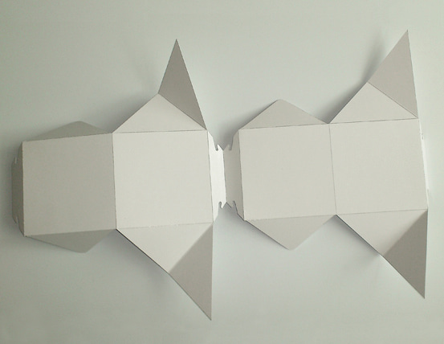
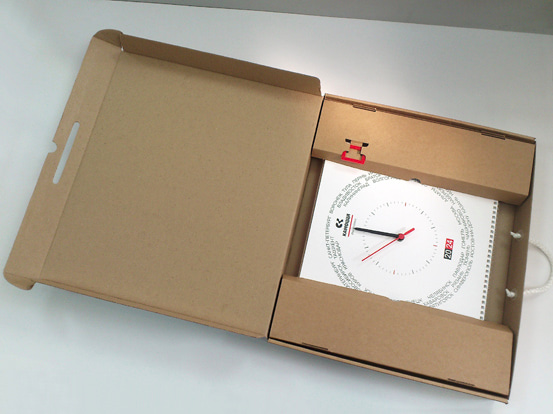

Конструктор упаковки
Покатов Тимур
В полиграфии работаю почти четверть века. Считаю, что в отрасли по призванию. Начинал верстальщиком в книжных издательствах, когда появился интерес непосредственно к производству — стал препресс-инженером. За эти годы освоил Illustrator, CorelDraw, InDesign, Photoshop, Prinergy, Preps, Pitstop. С 2015 года разрабатываю упаковку. К настоящему моменту имею приличный опыт по созданию конструкций из различных полиграфических материалов — картона, МГК, ГК. Много занимаюсь кашированной упаковкой. Любимая программа — ArtiosCAD.
Мне нравится, что типография — единая команда. И я делаю свою часть общего дела — работаю над тем, чтобы изделие было функциональным, занимало минимальную площадь на листе, легко и быстро собиралось. Привычно быть на связи с менеджером проекта и производством. Готов к обсуждению, учитываю мнения других, не боюсь дорабатывать и переделывать.
А также всегда рад получать новые знания и опыт. С удовольствием осваиваю новые программы, особенно интересны CAD-системы: AutoCAD, FreeCAD, Blender. Я — энтузиаст 3d-печати (для меня это не только творчество — иногда 3d-модели нужны на работе), скриптинга на JavaScript и Python. С 2022 года занимаюсь web-разработкой.
| Месяц, год | Должность, место работы | Обязанности | Полученный опыт |
|---|---|---|---|
| Сентябрь 1990 — апрель 1999 | Студент Московского государственного художественно-промышленный института им. С.Г.Строганова (1990–1996). После — "свободный художник". |
Что-то не припомню | Учился на факультете промышленного дизайна без каких-либо особых прорывов, несмотря на старания прекрасных преподавателей тогдашней Строгановки. Тем сильнее запомнилось то, что цепляло в те годы — знакомство с оригами, выклейка макетов из бумаги, CorelDraw в компьютерном классе, курсовая в виде самодельной книги… Дипломная работа — проект лечебной барокамеры. Я был первым (1996), кто вместо рейсфедера и аэрографа использовал распечатки чертежей из AutoCAD и рендера из 3D Studio. Получил: a) по шее от руководителя (и совершенно справедливо — качество широкоформатной печати в те годы было такое, что распечатку пришлось подкрашивать цветными карандашами) и b) приглашение от представителя производства прийти к ним на завод работать. Приглашением не воспользовался — в 90-е годы оно не казалось заманчивым. Следующие несколько лет были относительно беззаботными (спасибо родителям!), была возможность присмотреться к жизни. К слову, удалось даже поучаствовать в росписи храма. |
| Апрель 1999 — сентябрь 2008 | Ведущий дизайнер-верстальщик — руководитель издательского центра. Издательство «Жизнь и мысль» |
Полный цикл издательской подготовки: верстка, сканирование, цветокоррекция, ретушь, работа с типографиями, поддержка корпоративного сайта. | Моя профессиональная карьера началась в книжном издательстве. Постепенно от изучения основ работы с CorelDraw и пакетом Adobe я перешел к написанию скриптов на JavaScript. |
| Октябрь 2008 — февраль 2009 | Дизайнер-верстальщик. Издательство «Дизайн. Информация. Картография» |
Верстка книжных изданий, внесение корректуры, сканирование, цветокоррекция. | Не слишком удачная попытка пережить экономический кризис 2008 г. — рутинная работа верстальщика в обычном книжном издательстве. |
| Февраль 2009 — февраль 2011 | Оператор допечатной подготовки. Типография «Печатный двор "Граффити"» |
Выполнение всего объема допечатной подготовки различной полиграфической продукции — прием и проверка входных файлов, верстка, цветокоррекция, коррекция pdf-файлов, заказ клише, вырубных штампов, форм для шелкографии, спуск полос, изготовление цветопроб, вывод форм, формирование баз персонализации. | По сути, здесь я получил новую профессию — освоил prepress. Занимался версткой, переверсткой и цветокоррекцией. Узнал, как корректировать pdf-файлы в Enfocus PitStop, как должен быть подготовлен файл для изготовления вырубного штампа, а как для клише. Научился делать спуск полос в Preps и выводить цветопробы на принтере размером с письменный стол – DuPont Cromalin. Мне очень нравилась эта работа, но к сожалению, типография закрылась... |
| Февраль 2011 — ноябрь 2023 | Инженер допечатной подготовки. Конструктор упаковки. Типография «Альфа-дизайн» |
Разработка упаковки и других конструкций из бумаги и картона. Изготовление прототипа, заказ штампа. Если необходимо — участие в обсуждении, встреча с заказчиком, мастер-класс для сборщиков. А еще — прием, проверка и коррекция сторонних оригинал-макетов на офсет и цифру, заказ клише и вырубных штампов, разработка схем спуска полос и выполнение спуска полос, вывод офсетных форм и запись файлов на цифровую печать. | Что касается препресс, решал здесь те же задачи, что и на предыдущем месте. Но здесь нужно не только проверять-допиливать файлы и ставить их на спуск по схеме, но и самому рассчитывать эту схему. Шлейфы, схемы фальцовки, направление долевой — всё нужно держать в голове. Уходить вовремя с работы стал после написания пакета скриптов на JS. С их помощью InDesign, так же, как и Preps, ставит обрезные метки, рассчитывает раскладку многостраничного PDF, проставляет на каждом спуске № листа, метку «лицо/оборот». Разрабатывать эту систему было очень интересно! После того, как у меня появилось некоторое свободное время, я начал осваивать конструирование упаковки — отчасти из-за моего давнего, с институтских времен, творческого интереса, отчасти из-за практического интереса моего генерального директора к моим опытам. В те годы я очень много копировал чисто для себя разные прикольные коробочки, которые сотрудники приносили мне отовсюду. Скоро пришло время реальных заказов на разработку (примерно с 2015 года). При этом, чтобы и здесь уйти от рутины, написал скрипты для автопостроения в Illustrator простейших конструкций. Да, здесь я получил большой опыт. Временами было трудновато. Почти до всего приходилось добираться самому. Плоттера не было, все прототипы — и каппу и гофру — резал ножом. |
| Ноябрь 2023 — н.в. | Конструктор упаковки. Типография «Принтаж» |
Разработка разнообразной упаковки из картона, гофрокартона, кашированных материалов. Участие во всех этапах работы — первоначальном обсуждении, проектировании, изготовлении прототипа, расчете расхода материалов, запуске производства. | Параметрическое проектирование в ArtiosCAD. |
Примеры работ
Упаковка из картона
- 
Упаковка из МГК
- 
-